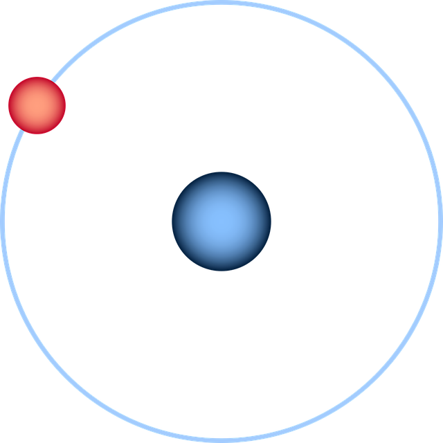

1008
H
1
1008
1s²
Grupo 1, Período 1
25 pm (covalente), 120 pm (Van der Waals)
Gasoso
14.01 K (-259.14°C, -434.45°F)
14.01 K (-259.14°C, -434.45°F)
0.08988 g/L
2.20 (escala de Pauling)
Produção de Amônia, refino de petróleo, armazenamento de energia, propulsão de foguete
